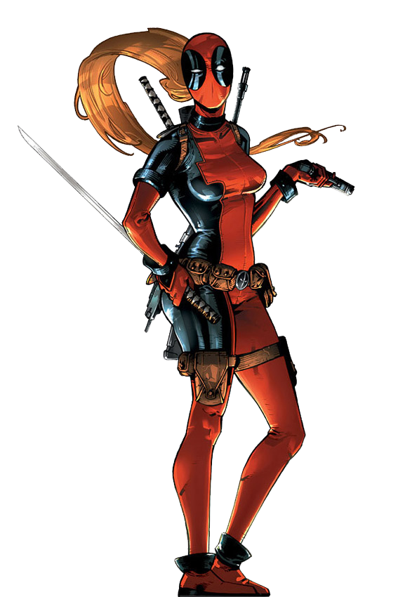

Fictional character biography
The character's back-story has been presented as vague and suFictional character biographybject to change, and within the narrative he is unable to remember his personal history due to a mental condition. Whether or not his name was even Wade Wilson is subject to speculation since one of his nemeses, T-Ray, claims in Deadpool #33 that he is the real Wade Wilson and that Deadpool is a vicious murderer who stole his identity. There have been other dubious stories about his history—at one point the supervillain Loki claimed to be his father.The original story had him
joining the Weapon X program after being kicked out of the United States Army Special Forces and given an artificial healing factor based on Wolverine's thanks to Dr. Emrys Killebrew, one of the head scientists. Wade Wilson grew up in Clair, Saskatchewan, and went to school in Wadena, Saskatchewan.Frequently, revelations are later retconned or ignored altogether, and in one issue, Deadpool himself joked that whether he is actually Wade Wilson depends on which the writer or the reader prefers. He has professed to be Canadian.
.jpg)
Deadpool is aware that he is a fictional comic book character. He commonly breaks the fourth wall, which is done by few other characters in the Marvel Universe, and this is used to humorous effect. He often has conversations with his two internal monologues, which are shown as caption boxes in his panels; in Deadpool #28 it is revealed that the villain Doctor Bong, a foe of Howard the Duck, is the logical voice appearing in yellow captions, and in Deadpool Annual #1 (2014) it is revealed that Madcap, a foe of Captain America, is the psychotic voice appearing in white captions with a typewriter serif. Deadpool is depicted as having an accelerated healing factor, which not only prevents him from being permanently injured through enhanced cell regeneration throughout his body, but also causes psychosis and mental instability, as his neurons are also affected by the accelerated regeneration. It is thought that while his psychoses are a handicap, they are also one of his assets as they make him an extremely unpredictable opponent. Taskmaster, who has photo-reflexive memory which allows him to copy anyone's fighting skills by observation, was unable to defeat Deadpool due to his chaotic and improvised fighting style.Taskmaster has also stated that Deadpool is an expert at distracting his opponents. The character, known for his talkative nature, has been nicknamed the "Merc with a Mouth". Deadpool has sometimes been portrayed to have a strong sense of core morality. In Uncanny X-Force, he storms out after Wolverine tries to rationalize Fantomex killing Apocalypse, who was at the time in a child form. After Wolverine argues that Deadpool is motivated solely by money, Archangel reveals that Deadpool never cashed any of his cheques.
Deadpool was ranked 182nd on Wizard magazine's list of the Top 200 Comic Book Characters of All Time, ranked 45th on Empire magazine's list of The 50 Greatest Comic Book Characters, and placed 31st on IGN's list of the Top 100 Comic Book Heroes.